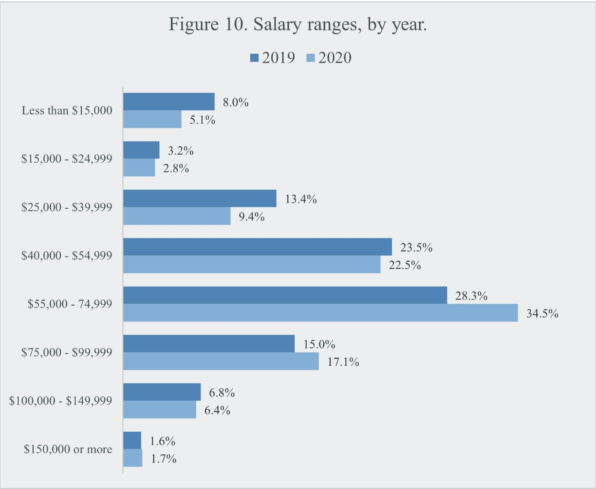

Per our conversation with Mark Toscano, while the number of traditional film preservation roles are shrinking (and there were unfortunately never many film archivists to begin with), there has been an expanded need for trained A/V media archivists in the LIS professions and GLAM institutions. Those filling more traditional LIS roles like metadata specialist, processing archivist, or cataloger are now sometimes expected to be able to handle audiovisual materials, or institutions may set aside a specific role to handle A/V material processing (e.g., digital preservation specialist, A/V cataloger, etc.).
In 2020, AMIA began conducting an “Annual Salary & Demographics Survey.” The first one was published in The Moving Image in 2020, and you can read it here. It’s not quite annual (they just solicited responses for a third edition, in 2025), but hopefully a new one will be released soon.

Salary data from 2020 AMIA survey
A wealth of other useful information is available in the AMIA survey. In general, media archiving is still a very small field, even with respect to other subfields in the LIS professions. There are limited jobs available, and people may approach the positions with a wide range of professional and academic preparation. As Mark noted in our interview, jobs are posted publicly, but also communicated by word-of-mouth and small email listservs. Working conditions, benefits, and salary are likely to be highly dependent on the institutions where a media archivist is employed. As with other LIS professions, many of the roles require a range of tasks, and many media archivists may juggle simultaneous full-time, part-time, contract, freelance, and volunteer positions.
During our conversation with Mark Toscano, we inquired about the manner in which information about available jobs in the field is commonly communicated. Based on his personal analysis of the job market over time, Mark identified a growing intention of larger institutions to formally advertise job listings publicly, online, in observance of internal policies, hiring equity and/or any relevant labor laws; however, he also acknowledged that inevitably, word-of-mouth circulation of open positions is likely still commonplace, perhaps particularly in smaller archives.
Mark emphasized in our conversation that he does not use AI at all in his workflow, and does not think there is productive space for AI in the film preservation landscape. Our own analysis of the above literature, research on job listings, and conversations with other media archival professionals suggest that the field is, as a whole, generally opposed to the use of AI in media preservation. There are potentially some hyperspecific use cases, e.g. algorithmic scratch clean-up applied to film scans in post-production software, but these are fairly limited and don't typically require advanced training; such AI capabilities would likely be introduced by the software environment or potentially in collaboration with a third-party provider (e.g., a film lab). It is up to the media archivist and their institution to evaluate use cases, which thus far are quite limited.